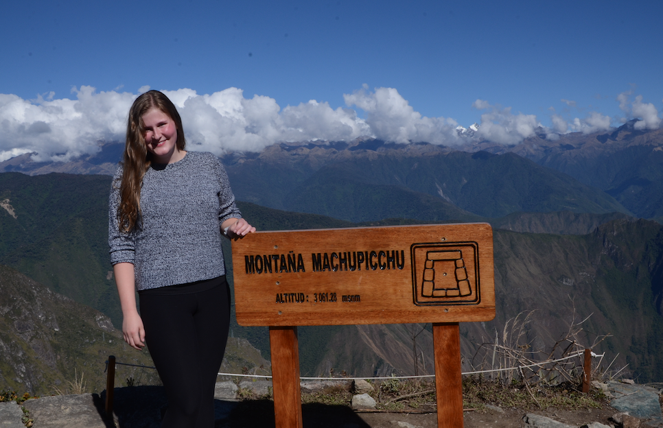

Things I Think About

Helen was born in Ann Arbor, Michigan. In 2020, Helen graduated from Michigan State University with a degree mechanical engineering and psychology. Helen is currently a graduate student in Biosystems and Agricultural Engineering at Michigan State University. She hopes to graduate in December of 2022.
In the summer months Helen plans to enjoy the gorgeous weather, eat endless smores, and attend several weddings. In August, she and a few friends will be headed to Grand Teton National Park to explore new trails and more western scenery.